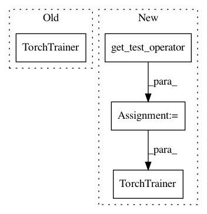

415be78cc0d1275a29d0ceda550d0d7a7a5224ea,python/ray/util/sgd/tests/test_torch.py,,test_multi_model,#Any#Any#,134
Before Change
trainer1.shutdown()
trainer2 = TorchTrainer(
model_creator=multi_model_creator,
data_creator=data_creator,
optimizer_creator=multi_optimizer_creator,
loss_creator=lambda config: nn.MSELoss(),
config={"custom_func": train_epoch},
training_operator_cls=_TestingOperator,
num_workers=num_workers)
trainer2.load_state_dict(state)
models2 = trainer2.get_model()
After Change
train_loader=train_dataloader,
validation_loader=val_dataloader)
TestOperator = get_test_operator(MultiModelOperator)
trainer1 = TorchTrainer(
config={"custom_func": train_epoch},
training_operator_cls=TestOperator,
num_workers=num_workers)
trainer1.train()
state = trainer1.state_dict()
models1 = trainer1.get_model()
In pattern: SUPERPATTERN
Frequency: 3
Non-data size: 4
Instances
Project Name: ray-project/ray
Commit Name: 415be78cc0d1275a29d0ceda550d0d7a7a5224ea
Time: 2020-09-08
Author: amogkam@users.noreply.github.com
File Name: python/ray/util/sgd/tests/test_torch.py
Class Name:
Method Name: test_multi_model
Project Name: ray-project/ray
Commit Name: 415be78cc0d1275a29d0ceda550d0d7a7a5224ea
Time: 2020-09-08
Author: amogkam@users.noreply.github.com
File Name: python/ray/util/sgd/tests/test_torch.py
Class Name:
Method Name: test_multi_model_matrix
Project Name: ray-project/ray
Commit Name: 415be78cc0d1275a29d0ceda550d0d7a7a5224ea
Time: 2020-09-08
Author: amogkam@users.noreply.github.com
File Name: python/ray/util/sgd/tests/test_torch.py
Class Name:
Method Name: test_dead_trainer